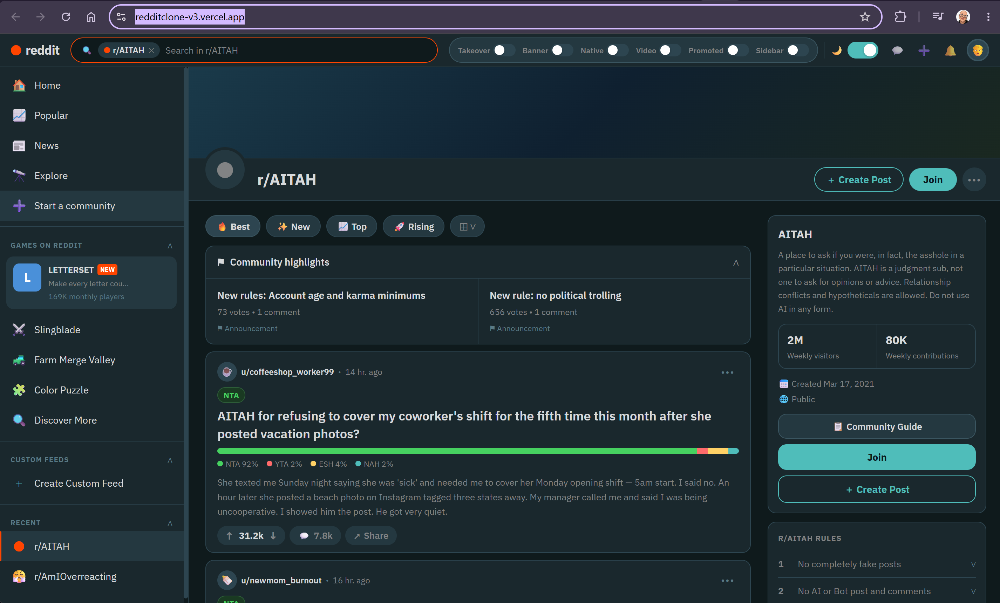
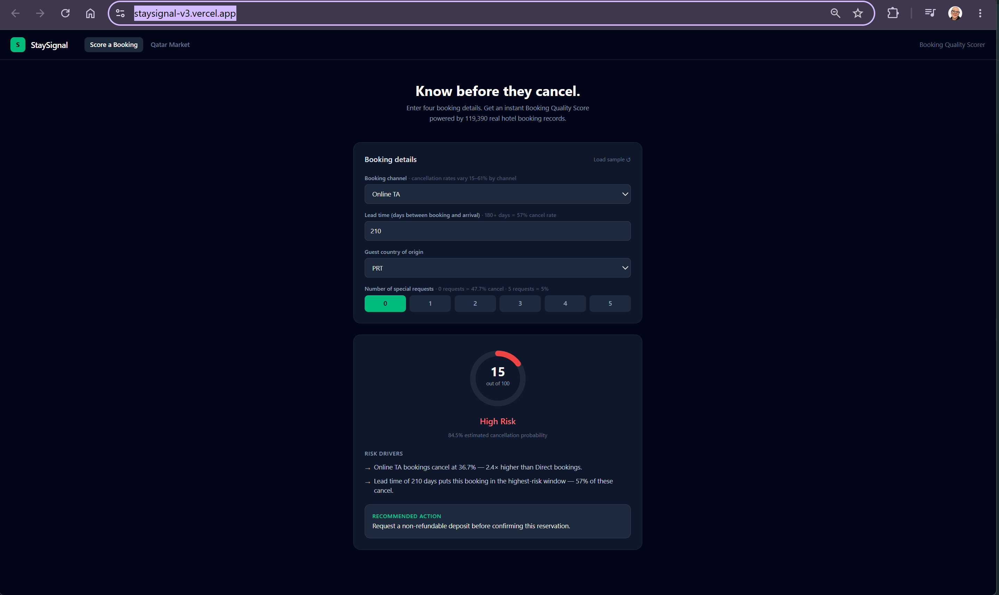
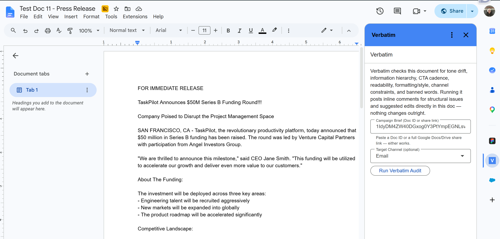
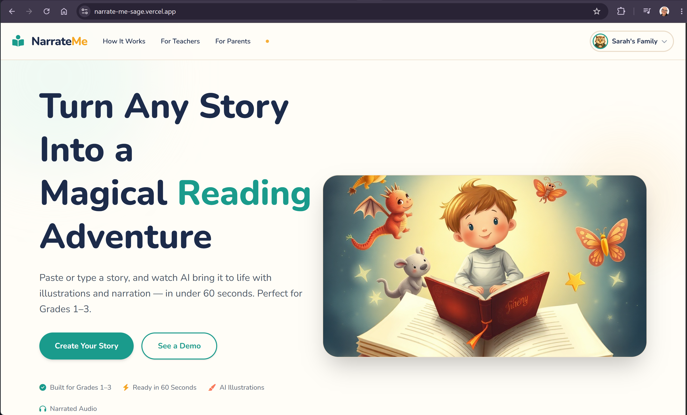

Ten years supporting IT at NYC schools and Fordham Law, now building with Claude API, React, Vite, Supabase and Vercel. Below: four projects from the Pursuit AI Native Fellowship (L2) and the earlier builds that got me there (L1). Click any preview to open the working app.
Pursuit L2 — AI Native Fellowship
June–July 2026 · React + Vite + Tailwind + Supabase + Vercel, with Claude API calls routed through Vercel serverless functions

Open live appRedditClone
React app replicating r/AITAH with six live ad unit types, each with expandable explanations that demystify the ad-supported internet in a single scroll.

Open live appStaySignal
Hospitality cancellation-risk predictor using XGBoost, with a Qatar Market Context tab showing dual-axis trend charts and COVID/World Cup reference bands.

View detailsVerbatim
Multi-agent AI copywriting audit built as a Google Docs Add-on. Core insight: tool schema restriction constrains agent behavior more reliably than prompt instructions.

Open live appNarrateMe
AI storyteller for kids 6–9 that turns written stories into narrated, illustrated multi-scene presentations with TTS and generated artwork.
Earlier Builds — L1
The progression that led to Pursuit: first AI apps, experiments, and one first published repo
Onset
An AI-powered brain dump and task manager for adults with ADHD and focus challenges — turns scattered thoughts into actionable tasks in real time.
CarSync
A shared car coordination PWA for two-driver households: real-time parking location sharing, shift scheduling, and status updates with email OTP login.
Fridge-to-Meal Planner
Enter what's already in your kitchen and get personalized, practical meal suggestions powered by the Claude API.
Perspective Confidence Score
A "spell-checker for perspective" — artists upload drawings and get a scored, detailed technique analysis powered by Claude Vision.
Digital Asset Manager
Open-source DAM tool that auto-tags images with Google Cloud Vision and supports duplicate detection, running entirely in Google Sheets — no hosting required.
Nexus Social
A reimagined saved-posts feature for social platforms — organize, search, and retrieve content saved across apps in one place.
AI Math Chatbot
A chat-based math practice prototype for middle schoolers, with hint-only guidance, adaptive difficulty, and light gamification.
Focus Mini App
A productivity app that alternates focused work sessions with short breathing breaks to help sustain concentration through the day.
Simple Calculator
A dark-themed web calculator with keyboard support and a clean interface — my first project published to GitHub Pages.
Kilometer-to-Mile Converter
A dark-themed unit converter for kilometers to miles, with results rounded to one decimal place for clean output.